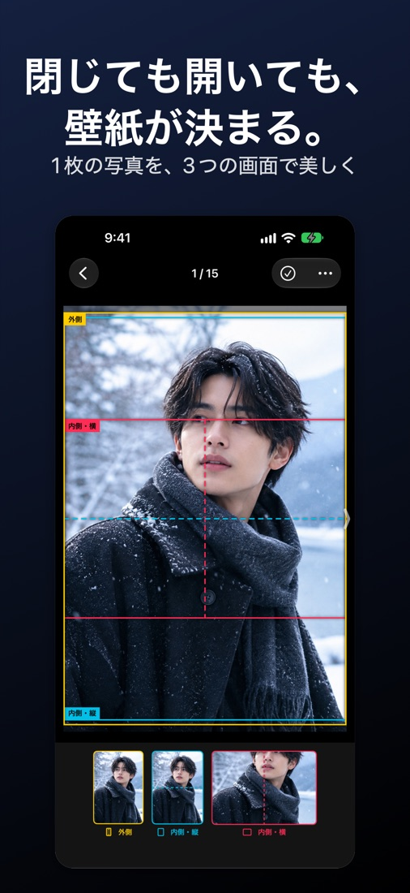
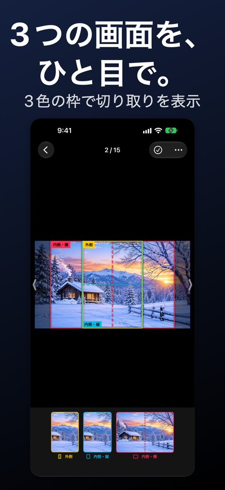
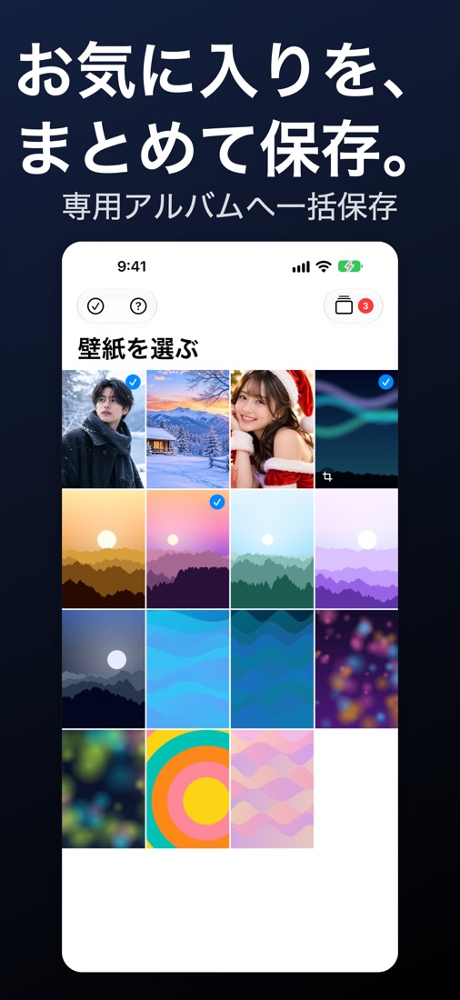
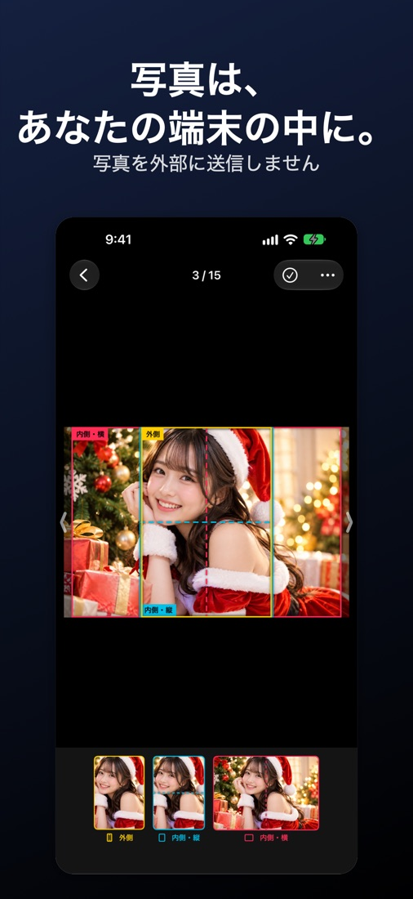
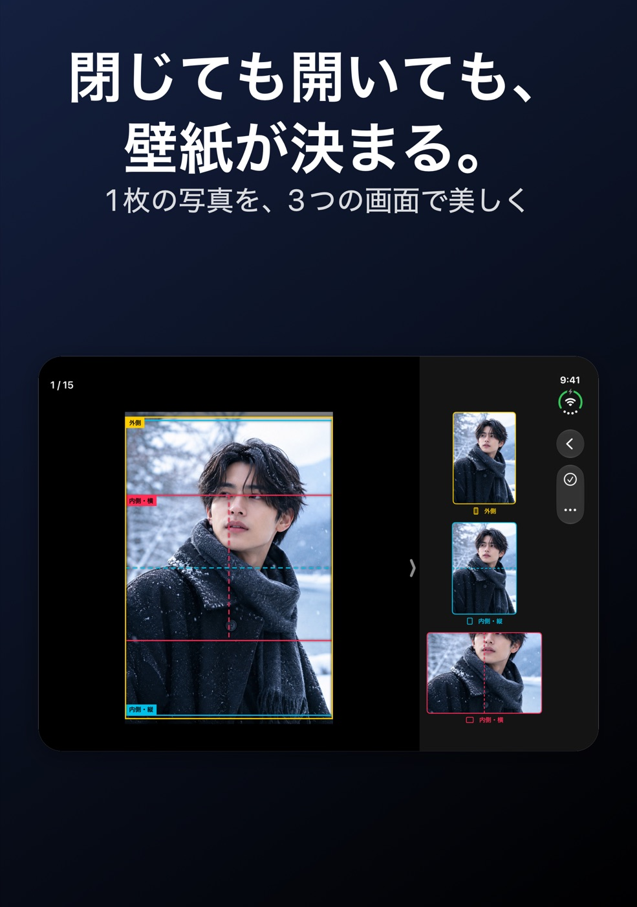

閉じても開いても、
壁紙が決まる。
1枚の写真を、3つの画面でいちばん美しく。
双璧壁紙切り取りガイド
外側内側・縦内側・横
iPhone Duo・iPad 対応
動画を見る
THE PROBLEM
開いたら、顔が切れていた。
iPhone Duo は、閉じた時と開いた時で画面の形がまったく違います。同じ壁紙でも、映る範囲は3通り。
外側
閉じた時の縦長の画面。いちばん目にする壁紙です。
内側・縦
開いて縦に持った時。折り目は横に通ります。
内側・横
本のように開いた大画面。折り目は真ん中を縦に通ります。

01
閉じても開いても、
壁紙が決まる。
外側、内側の縦、内側の横。3つの画面でどう見えるかを、写真の上と小さなプレビューで同時に確かめられます。

02
3つの画面を、
ひと目で。
黄が外側、水色が内側の縦、ピンクが内側の横。折り目は点線で、どの画面にも映らない部分は暗く表示します。

03
指先で、
理想の構図に。
2本指で広げる、すぼめるだけで枠の大きさが変わり、そのまま動かせば位置も変わります。調整した写真は超解像で美しく保存。

04
お気に入りを、
まとめて保存。
気に入った写真はチェックするだけ。専用アルバム「Duo壁紙」にまとめて保存できるので、壁紙を設定する時に迷いません。

05
写真は、
あなたの端末の中に。
写真の処理はすべて端末の中だけ。外部に送信することはありません。
BIG SCREEN
開けば、大きな画面で。
iPhone Duo を開いた時や iPad では、写真と3つのプレビューを横に並べて表示します。


HOW IT WORKS
使い方は4ステップ
一覧から選ぶ
写真をタップして開きます。
枠を確認
3色の枠で切り取られる範囲を確認。
調整してチェック
ピンチで調整し、気に入ったらチェック。
まとめて保存
専用アルバムから壁紙に設定。
双璧壁紙切り取りガイド
閉じても開いても、
壁紙が決まる。
画面ごとの切り取り範囲は、公開されている画面サイズから計算した目安です。